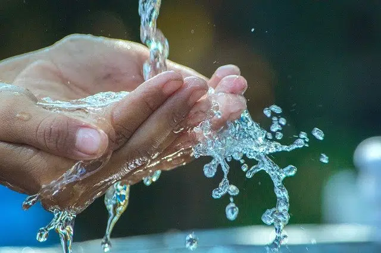

El Agua
Del latín aqua, el agua es una sustancia cuyas moléculas están compuestas por un átomo de oxígeno y dos átomos de hidrógeno. Se trata de un líquido inodoro (sin olor), insípido (sin sabor) e incoloro (sin color), aunque también puede hallarse en estado sólido (cuando se conoce como hielo) o en estado gaseoso (vapor). El agua es el componente que aparece con mayor abundancia en la superficie terrestre (cubre cerca del 71% de la corteza de la Tierra). Forma los océanos, los ríos y las lluvias, además de ser parte constituyente de todos los organismos vivos. La circulación del agua en los ecosistemas se produce a través de un ciclo que consiste en la evaporación o transpiración, la precipitación y el desplazamiento hacia el mar.

Tipos de agua: Dulce, potable, salada y mineral
Se conoce como agua dulce al agua que contiene una cantidad mínima de sales disueltas (a diferencia del agua de mar, que es salada). A través de un proceso de potabilización, el ser humano logra convertir el agua dulce en agua potable, es decir, apta para el consumo gracias al valor equilibrado de sus minerales. Es importante destacar que la escasez de agua potable en numerosas regiones del planeta genera más de 5 millones de muertes al año. El agua mineral, como su nombre indica, contiene minerales y otras sustancias disueltas, de modo tal que se le agrega un valor terapéutico o se altera el sabor. Este tipo de agua es el que se comercializa envasado en todo el mundo para el consumo humano.
